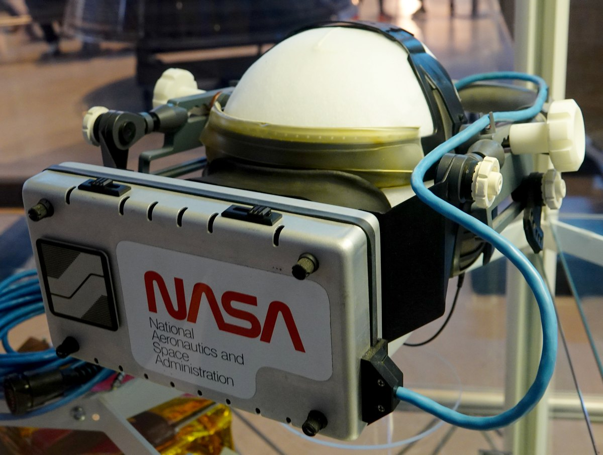
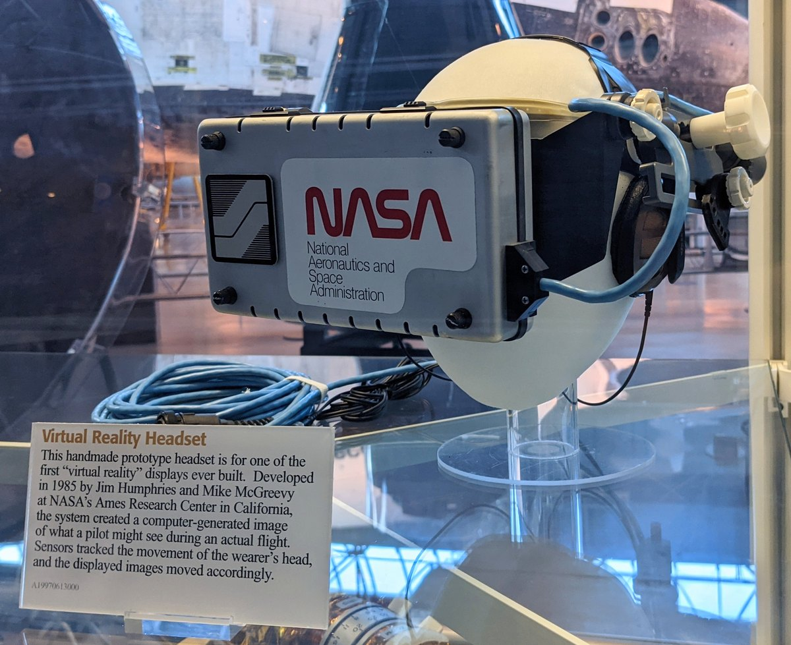

1985
NASA Ames Research Center, Aerospace Human Factors Division (Jim Humphries, Mike McGreevy)
NASA Ames Virtual Reality Headset (1985)
The handmade research prototype that made head position the spatial input — the origin of head-tracked immersive displays

Overview
Deep dive
Media
